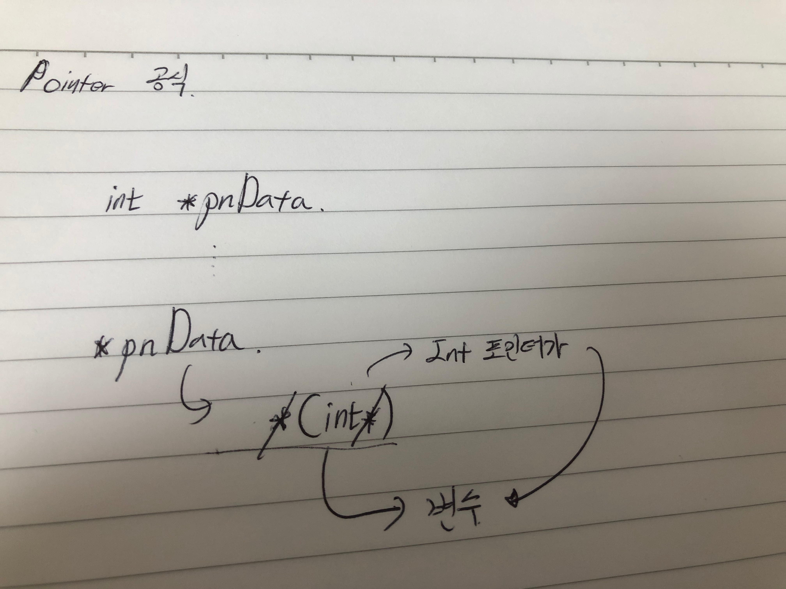
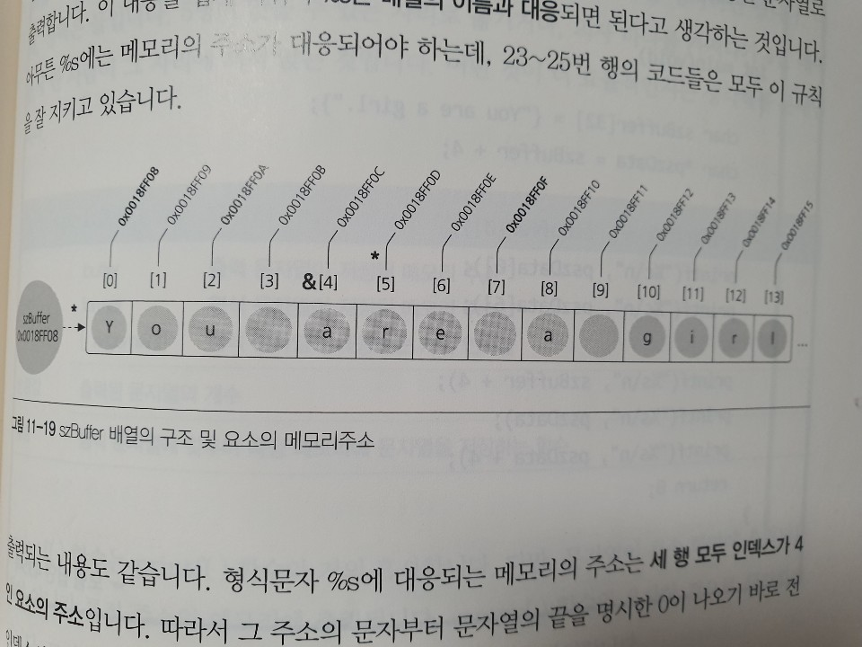
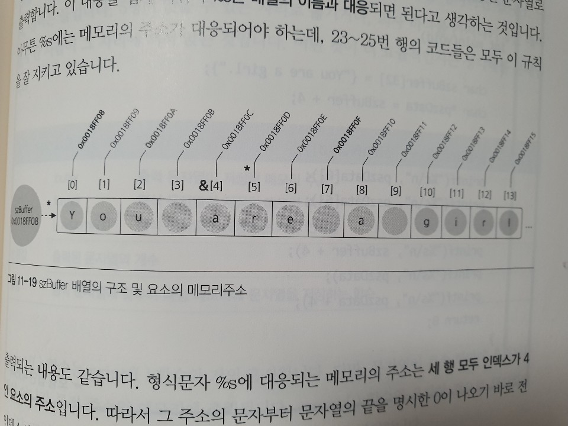
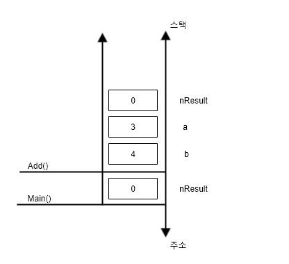
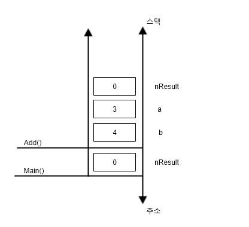

ASLR : Acess Space Layout Randomization ( 자동으로 메모리 주소를 변경해주는 기능 )
WINDOWS 7부터 적용되기 시작했음 -> 메모리 해킹을 방지하기 위해서 ( 근본적인 차단을 위해서 적용됨 )
C++ 프로젝트에서 "미리 컴파일된 헤더 파일이 이전 버전의 컴파일러에서 만들어졌거나 미리 컴파일된 헤더가 c++인데 c에서 사용하고 있거나 또는 그 반대의 경우입니다" 가
표시되는 경우 아래와 같이 처리할 수 있다.
WINDOWS 7부터 적용되기 시작했음 -> 메모리 해킹을 방지하기 위해서 ( 근본적인 차단을 위해서 적용됨 )
C++ 프로젝트에서 "미리 컴파일된 헤더 파일이 이전 버전의 컴파일러에서 만들어졌거나 미리 컴파일된 헤더가 c++인데 c에서 사용하고 있거나 또는 그 반대의 경우입니다" 가
표시되는 경우 아래와 같이 처리할 수 있다.
변수 : 변수의 본질은 메모리이며 모든 메모리는 자신의 위치를 식별하기 위한 근거로 고유번호(일련번호)를 같는데, 이 번호를 메모리의 주소라고 합니다.
위의 코드 프로세스를 아래의 이미지와 같이 주소값으로 조정
메모리의 종류
포인터 변수
포인터 변수는 메모리의 주소를 저장하기 위한 전용 변수입니다. 모든 사물함에 고유번호가 붙어 잇는 것 처럼 바이트 단위 메모리에는 고유번호가 붙어 있습니다. 이 번호를 주소라고 부르지만 '위치정보'라고 생각할 수 있는 이유는 찜질방 사물함의 경우와 동일합니다. 또한 사물함 번호가 100이라고 할 때, 이 사물함을 숫자대신 실질적인 "철수의 사물함"으로 지칭할 수 있습니다. 이는 변수명을 선언하는 것과 동일합니다. &nData 라는 연산은 "이름이 nData인 메모리의 실제 주소는?" 이라는 의미입니다.
포인터를 사용해야하는 이유?
- 이름에 부여된 메모리
- 그 안에 담긴 정보
- 메모리의 주소
#include <stdio.h>
int main(void) {
// 임의 변경 가능한 메모리 주소의 특정 위치에 nData가 "지정"된다.
int nData = 10;
printf("%s\n", "nData");
// 변수 nData에 들어잇는 값을 출력
printf("%d\n", "nData");
// 변수 nData의 메모리 주소를 출력
printf("%p\n", &nData); // 0012FF28
return 0;
}
위의 코드 프로세스를 아래의 이미지와 같이 주소값으로 조정
#include <stdio.h>
void main() {
int nData = 300;
return 0;
}
비주얼 스튜디오에서 메모리창으로 봤을 때, 메모리의 종류
-
Stack
자동변수이고 지역변수인 변수가 사용하는 메모리 영역이며, 임시 메모리의 성격을 가진다. 크기가 작고(기본 설정을 기준으로 최대 1MB 수준) 관리(할당 및 반환)가 자동으로 이루어지는 장점이 있다. -
Heap
동적 할당 할 수 있는 자유 메모리 영역이며, 개발자 자신 스스로 직접관리(수동)해야 한다. 32비트 응용 프로그램의 경우, 대략 1xGB 정도를 사용할 수 있다.
따라서 대량의 메모리가 필요하거나 필요한 메모리의 크리를 미리 알 수 없을 때 사용한다. -
PE Image
- Text section
C 언어의 소스코드가 번역된 기계어가 저장된 메모리 영역이며, 기본적으로 읽기 전용 메모리이다. 만일 어떤 식으로 이 영역의 메모리를 변조한다면, 해킹이라 할 수 있다.
- Read Only
상수 형태로 기술하는 문자열이 저장된 메모리 영역이며, Text 영역처럼 읽기는 가능하나 쓰기는 허용되지 않는다.
- Read/Write
정적 변수나 전역 변수들이 사용하는 메모리 영역이며, 별도로 초기화하지 않아도 0으로 초기화된다. 관리는 자동이라서 힙 영역 메모리처럼 할당 및 해제를 신경 쓸 필요는 없다.
- Text section
포인터 변수
포인터 변수는 메모리의 주소를 저장하기 위한 전용 변수입니다. 모든 사물함에 고유번호가 붙어 잇는 것 처럼 바이트 단위 메모리에는 고유번호가 붙어 있습니다. 이 번호를 주소라고 부르지만 '위치정보'라고 생각할 수 있는 이유는 찜질방 사물함의 경우와 동일합니다. 또한 사물함 번호가 100이라고 할 때, 이 사물함을 숫자대신 실질적인 "철수의 사물함"으로 지칭할 수 있습니다. 이는 변수명을 선언하는 것과 동일합니다. &nData 라는 연산은 "이름이 nData인 메모리의 실제 주소는?" 이라는 의미입니다.
주소 연산과 정반대 되는 개념의 연산자는 바로 '간접지정 연산자(*)' 입니다. 여기서 '지정'이 라는 말은 임의 대상 메모리에 대한 길이와 해석방법 즉,
자료형을 지정한다는 뜻입니다. 만일 메모리의 수소가 0x0012FF60인 메모리를 int형으로 지정한다는 뜻은 총 네 바이트의 메모리를 한 세트로 보고,
int형 변수로 취급한다는 말이 됩니다.
#include <stdio.h>
//void(*)(int)
void TestFunc(int nParam)
{
printf("Test Func() : %d\n ", nParam );
}
int main(void)
{
TestFunc(10); // High Level
// 함수 포인터 - 함수도 주소값을 가지는 void 함수 포인터이다.
((void(*)(int))0x004113C0) (10); // Low Level
((void(*)(int))4264896) (10);
return 0;
}
포인터를 사용해야하는 이유?
#include <stdio.h>
/*
문제 : 전역변수를 선언해야하는 자체가 문제다.
그래서 이를 지역변수를 이용해서 함수로 전달하는게 더 효율 적일 수 있는데,
*/
int g_aList[5] = { 40, 20, 50, 30, 10 };
void TestFunc()
{
for( int i = 0 ; i < 5 ; ++ i){
printf("%d\t" , g_aList[i]);
}
putchar('\n');
}
int main(void)
{
// g_aList 를 정렬하는 코드를 작성
TestFunc();
return 0;
}
/*
변경한 코드
*/
void TestFunc(int *paList)
{
for( int i = 0 ; i < 5 ; ++ i){
printf("%d\t" , paList[i]);
}
putchar('\n');
}
int main(void)
{
// g_aList 를 정렬하는 코드를 작성
int aList[5] = { 40, 20, 50, 30, 10 };
TestFunc(aList);
return 0;
}
#include <stdio.h>
// Pointer의 기본
void main() {
// 간접 지정
int nData = 300; // 메모리 주소 : 0x0018FF28 - 값 : 2C 01 00 00
int *pnData = &nData; // 메모리 주소 : 0x0018FFIC - 값 : 28 FF 18 00
// 여기에서 pnData는 Integer의 포인터로 Integer의 값 만큼 2개가 늘어나는 것
pnData += 2; // 메모리 주소 : 0x0018FF28 - 값 : 30 FF 18 00 -- 해당 시점에 포인터 변수의 값이 변경됨.
*pnData = 300; // 메모리 주소 : 0x0018FF30 - 값 : 2C 01 00 00
return 0;
}
Pointer의 기본 공식

#include
void main(void) {
int nData = 300;
int *pnData = &nData;
*((int*)0x0018FF28) = 600; // 직접 지정
*pnData = 600 // 간접 지정
}
간접지정은 변경될 수 있는 임의의 기준주소로 상대적이 위치(주소)를 식별하는 방식입니다.
만일 철수의 절친인 길동이는 늘 철 수 옆집에 살기로 했다고 생각해봅시다. 그렇다면 길동이 집주소를 말할 수 도 있지만,
"철수 옆집이요"라고 할 수도 있습니다. 쉽게 생각해서 철수 집주소가 100번지면 길동이 집주소는 101번지가 되는 것입니다.
이처런 어떤 기준을 근거로 상대인 메모리의 위치를 설명하는 방법이 '간접지정'입니다.
#include <stdio.h>
int main(void)
{
// int 형식 변수 선언 및 정의
int x = 10;
// 변수 x가리키는 int형식에 대한 포인터 변수 선언 및 정의
int *pnData = &x;
printf("x : %d\n", x);
// pnData 포인터 변수가 가리키는 대상 메모리를 int형 변수로
// 간접 지정하고 20을 대입한다.
// 현대 가리키는 대상 메모리는 x의 메모리이므로 x의 값이 20이 된다.
*pnData = 20;
// *pnData - 포인터 변수 pnData에 저장된 주소를 가진 메모리를 int형 변수로 취급
printf("x : %d\n" , x);
return 0;
}
포인터를 이용해 다른 공간의 함수에 변수를 전달한다.
#include <stdio.h>
void assign(int *);
int main()
{
int num = 0;
assign(&num);
printf("함수 호출 후의 num 값 : %d\n", num);
return 0;
}
void assign(int * ip)
{
*ip = 10; // 함수가 호출된 이후의 값은 10이다.
}
배열을 이해하는 방식
배열의 이름은 0번 요소의 주소이며, 전체 배열을 대표하는 식별자입니다. 그리고 포인터 변수는 주소를 저정하기 위한 변수 입니다. 배열의 이름이 주소이므로, 포인터 변수에 저장할 수 있습니다.
컴파일러가 알려준 주소는 pszData 변수의 주소입니다. 그리고 그 안에 저장된 정보는 szBuffer입니다. 따라서 포인터 변수안에 담긴 정보는 szBuffer의 실제주소입니다. 이를 근거로 메모리 구조를 표현하면 아래와 같습니다.
#include <stdio.h>
int main(void) {
int aList[5] = { 40, 20, 50, 30, 10 };
int *paList = aList;
paList + 1; // 기준 주소 + 정수(옵셋) -> 상대주소
*(paList + 1); // int 형 변수가 지정된다.
*(paList + 1) = 5; // paList[1] = 5 과 동일하다.
paList[1] = 5;
return 0;
}
배열의 이름은 0번 요소의 주소이며, 전체 배열을 대표하는 식별자입니다. 그리고 포인터 변수는 주소를 저정하기 위한 변수 입니다. 배열의 이름이 주소이므로, 포인터 변수에 저장할 수 있습니다.
#include <stdio.h>
int main(void)
{
// int 배열 선언 및 정의, 배열의 이름은 연속된 각 요소들 중
// 전체를 대표하는 0번째 요소에 대한 '주소 상수' 이다.
int aList[5] = { 0 };
// int에 대한 포인터 변수를 배열의 이름으로 정의한다.
// int 형 배열의 이름을 "int에 대한 포인터 초깃값"으로 기술하였다.
int *pnData = aList; // int *pnData = &aList[0]
/*
조금 응용한다면
pnData = &aList[1];
pnData = &aList[2];
도 성립할 수 있다.
*/
// 배열의 0인 요소의 값을 출력한다.
printf("aList[0] : %d\n", aList[0]);
// 포인터가 가리키고 있는 배열 0번 요소의 값을 변경하고 출력한다.
// 아래 코드에 의해서 간접 지정되는 대상 메모리는 aList 배열의 0번 요소입니다.
// "간접지정 연산자" 는 단항 연산이며, "pnData라는 포인터에 저장된 주소의 메모리를 int 형 변수로 보겠다는 의미"
// "변수에 담긴 주소"를 간접적인 방법으로 지정했으니 간접 지정입니다.
*pnData = 20;
/*
위의 연산은 사실 *(pnData +0)를 의미하며, 이 코드의 의미는 포인터 변수 pnData에 저장된 주소를 기준으로
오른쪽으로 int 0개 떨어진 위치(주소)의 메모리를 int형 변수로 지정한다는 것입니다.
그리고 *(pnData + 0)를 다른 코드로 표시하면 정확히 pnData[0]입니다
배열과 포인터가 문법상 호환되는 이유는 개념적으로나 기술적으로나 사실상 같기 때문입니다.
단지 차이가 있다면 포인터 변수는 말 그대로 변수 이고, 배열의 이름은 '주소상수'라는 것 뿐입니다.
*/
printf("aList[0] : %d\n", aList[0]);
return 0;
}
#include <stdio.h>
#include <string.h>
int main(void)
{
// 문자 배열 (char[16]) 의 선언 및 정의
// 선언한 크기는 char[16]이지만 초기화는 char[6] 문자열로 한다.
char szBuffer[16] = { "Hello" };
// 문자 배열을 가리키는 문자 포인터 변수의 선언 및 정의
char *pszData = szBuffer;
int nLength = 0;
// pszData 포인터 변수가 가리키는 대상에 저장된 char형 데이터가
// 문자열의 끝을 의미하는 NULL문자가 될 때까지 반복문 수행
while (*pszData != '\0') {
// 포인터를 다음으로 한 칸 이동 시킨다.
// 해당 부분이 수행되면 pszData에 담긴 정보는 주소를 기준으로 1만큼 증가합니다. 이는 정확히는
// 오른쪽으로 char 형 크기 만큼 한 칸 이동(주소 증가)했기 때문입니다.
pszData++;
nLength++;
}
// strlen() 함수로 문자열의 길이 ( 바이트 단위 크기 ) 를 출력한다.
printf("Length : %d\n", nLength);
printf("Length : %d\n", strlen(szBuffer));
printf("Length : %d\n", strlen("World"));
// 포인터는 변수이니다. 자신이 담고 있는 정보를 바꿔버리는 자체가 상대 주소 계산이 됩니다.
// 그리고 동시에 새로운 기준주소로 변경됨을 의미하니다. 즉,
// 계산을 통해 얻은 상태 주소로 정보를 업데이트 하면 그것이 새로운 기준 주소가 되어 인접한 정보에
// 접근할 수 있습니다.
return 0;
}
컴파일러가 알려준 주소는 pszData 변수의 주소입니다. 그리고 그 안에 저장된 정보는 szBuffer입니다. 따라서 포인터 변수안에 담긴 정보는 szBuffer의 실제주소입니다. 이를 근거로 메모리 구조를 표현하면 아래와 같습니다.
#include <stdio.h>
int main(void)
{
char szBuffer[16] = { "Hello" };
char *pszData = szBuffer;
/*
pszData의 주소는 최초 기준 주소에서 계속해서 증가했습니다.
따라서 반복문을 실행한 후, pszData에 담긴 주소는 szBuffer 보다 크거나 같습니다. 그리고 이 가정에 의해서
아래의 코드와 같이 연산하면 문자열의 끝인 '\0'이 저장된 배열 요소의 인덱스를 알 수가 있는데
이 인덱스와 문자열의 길이가 일치 합니다.
문자열 본질에 대한 기본 이해, 상대주소에서 기준주소를 빼 역으로 인덱스를 계산하는 방법, 배열의 인덱스가 0에서 시작할 수 밖에
없는 이유 등에 대해서 기술적 근거를 들었다고 할 수 있습니다.
*/
while (*pszData != '\0')
{
pszData++;
}
printf("Length : %d\n", pszData - szBuffer);
return 0;
}
malloc() 과 free()
void ptrmalloc01() {
int *pList = NULL, i = 0;
// sizeof(int) * 3 의 결과는 int형이 4 바이트 이므로 12 입니다.
// malloc의 함수 반환 자료형은 void* 이기 때문에 int*로 강제 형변환 처리
// void * 에서 void는 길이도 해석방법도 없다는 의미
// void * 의 본질이 포인터인 것은 맞지만 , 이 주소가 가리키는 대상 메모리를 어떤 형식(자료형)으로 해석할지는 아직 결정되지 않았음을 의미합니다
pList = (int*)malloc(sizeof(int) * 3);
pList[0] = 10;
pList[1] = 20;
pList[2] = 30;
for ( i = 0; i < 3; i++)
{
printf("%d\n", pList[i]);
}
// 동적 할당한 메모리를 반환합니다.
// 만약 개발자의 실수로 아래의 처리를 안할 경우, 메모리가 사용할 수 없는 상태가 되는 것을 '메모리 누수(memory leak)'라고 부릅니다.
free(pList);
return 0;
}
void prtmeminit01() {
int *pList = NULL, *pNewList = NULL;
// A. int 형 3개 배열 선언 및 정의 ( 0 초기화 )
int aList[3] = { 0 };
// B. int 형 3개를 담을 수 있는 크기의 메모리를 동적으로 할당한 후
// 메모리를 모두 0으로 초기화
// malloc() 함수가 반환한 메모리의 기준 주소를 시작으로 동적 할당된 크기만큼 모두 0으로 초기화 합니다.
// sizeof(int) * 3 이라고 쓰면 동적 할당한 메모리가 int[3]의 형식으로 사용될 가능성을 암시할 수 있습니다.
pList = (int*)malloc(sizeof(int) * 3);
memset(pList, 0, sizeof(int) * 3);
// C. int형 3개를 담을 수 있는 메모리를 0으로 초기화 한 후 할당 받음
pNewList = (int*)calloc(3, sizeof(int));
// 동적 할당한 메모리들을 해제
free(pList);
free(pNewList);
return 0;
}
void ptrmeminit02() {
// 선언할 배열 요소의 크기를 기술하지 않았지만 초기값을 기준으로
// 자동으로 크기가 결정된다.
char szBuffer[] = { "Hello" };
// "Hello" 문자열이 저장된 메모리의 주소로 초기화되는 포인터 변수
/*
11번 행은 char형에 대한 호인터 변수의 선언 및 정의 입니다.
그러나 여기 기술된 문자열 "Hello"는 위의 행의 코드와는 다릅니다. 위에는 지연변수인 szBuffer 배열이 사용하는 스택 메모리의 초깃값이 되는 것이지만,
아래는 데이터 영역 중 읽기 전용 어딘가에 "Hello"라는 문자열이 저장되고 첫 글자인 'H'가 저장된 기준주소가 포인터의 초깃값이 됩니다.
메모리를 동적할당하는 것이 아닌데 동적 할당으로 잘못 생각할 수 있습니다.
*/
char *pszBuffer = "Hello";
// 동적 할당된 메모리의 주소가 저정도리 포인터 선언 및 정의
char *pszData = NULL;
// 메모리를 동적으로 할당하고 "Hello" 문자열로 초기화
pszData = (char*)malloc(sizeof(char) * 6);
pszData[0] = 'H';
pszData[1] = 'e';
pszData[2] = 'l';
pszData[3] = 'l';
pszData[4] = '0';
pszData[5] = '\0'; // 문자열의 끝을 의미하는 NULL 문자
puts(szBuffer);
puts(pszBuffer);
puts(pszData);
// 동적 할당 메모리 해제
free(pszData);
return 0;
}
void msize01() {
char *pszData = NULL;
pszData = (char*)malloc(sizeof(char) * 6);
printf("%d\n", _msize(pszData));
free(pszData);
return 0;
}
배열 처럼 여러 인스턴스가 뭉쳐진 경우에는 절대로 단순 대입으로 r-value를 l-value로 복사할 수가 없습니다. 이 문제는 배열에 대해 배울 때,
이미 경험한 적이 있는데, 배열의 이름이 식별자인것은 맞지만, 변수가 아니라 '주소상수'에 부여된 식별자이므로 l-value가 되지 못합니다.
게다가 'szNewBuffer = szBuffer;'라는 코드의 개념적의미는 충분히 짐작할 수 있지만 문법적으로는 절대 허용되지 않는 연산입니다.
각 배열의 요소 만큼 반복문을 수행하여 요소별로 일일이 단순 대입 연산을 수행해주어야 합니다.
void ptrmemcpy01() {
char szBuffer[12] = { "HelloWorld" };
char szNewBuffer[12] = { 0 };
// 원본에서 4바이트만 대상 메모리로 복사
memcpy(szNewBuffer, szBuffer, 4);
puts(szNewBuffer);
// 원본에서 6바이트만 대상 메모리로 복사
memcpy(szNewBuffer, szBuffer, 6);
puts(szNewBuffer);
// 원본 메모리 전체를 대상 메모리로 복사
memcpy(szNewBuffer, szBuffer, sizeof(szBuffer));
puts(szNewBuffer);
return 0;
}
#include <studio.h>
#include <string.h>
int main(void){
char szBuffer[12] = { "TestString" };
char *pszData = "TestString";
printf("%d\n", memcmp(szBuffer, pszData, 10));
printf("%d\n", memcmp("teststring", pszData, 10));
printf("%d\n", memcmp("DataString", pszData, 10));
return 0;
}
#include <stdio.h>
int main(void){
char szBuffer[12] = { "TestString" };
char *pszData = "TestString";
// 다음 코드들은 두 문자열이 같은지 비교하는 것이 아니라
// 문자열이 저장된 메모리의 위치가 같은지 비교하는 것이다.
// 단지 주소가 같은 주소인지 비교하는 것에 불과하다.
printf("%d\n", szBuffer == pszData);
printf("%d\n", "TestString" == pszData);
printf("%d\n", "DataString" == "TestString");
return 0;
}
#include <stdio.h>
int main(void){
char szBuffer[12] = { "TestString" };
char *pszData = "TestString";
// 다음 코드들은 주소와 상관 없이 대 상 메모리에 저장된
// 문자열이 같은지 비교한다.
// 만일 길이가 다르면 무조건 같은 문자열이 아니다.
printf("%d\n", strcmp(szBuffer,pszData));
printf("%d\n", strcmp("TestString",pszData));
printf("%d\n", strcmp("DataString","TestString"));
return 0;
}
#include <stdio.h>
#include <string.h>
int main(void)
{
char szBuffer[32] = { "I am a boy."};
// 배열의 주소를 출력한다.
printf("%p\n", szBuffer);
// 대상 문자열에서 문자열을 검색하고 찾은 위치(주소)를 출력한다.
printf("%p\n", strstr(szBuffer, "am"));
printf("%p\n", strstr(szBuffer, "boy"));
// 문자열이 검색된 위치에서 기준이 되는 주소를 빼면
// 인덱스를 계산할 수 있다.
// strstr() 함수가 검색에 성공했을 때 반환하는 메모리의 첫 주소는 첫 번째 인수로 전달된 메모리의 주소보다 값이 더 큰 숫자라는 것
printf("Index : %d\n", strstr(szBuffer, "am") - szBuffer);
printf("Index : %d\n", strstr(szBuffer, "boy") - szBuffer);
return 0;
}
1차원 배열을 포인터 관점에서 설명하면 기준 주소에서 일정 인덱스 만큼 떨어진 상대 주소를 배열 요소의 변수로 지정하는 연산이라고 할 수 있다.
*(기준 주소 + 인덱스)나 기준주소[인덱스] 나 동일하다는 의미이다.

*(기준 주소 + 인덱스)나 기준주소[인덱스] 나 동일하다는 의미이다.
#include <stdio.h>
#include <string.h>
int main(void){
char szBuffer[32] = { "You are a girl." };
// 배열의 첫 번째(0번) 요소의 값을 %c 형식으로 출력한다.
printf("%c\n", szBuffer[0]);
// 0번 요소에 대한 주소인 배열의 이름(주소)에 대해 간접 지정 연산을
// 수행하고 그 안에 담긴 정보를 출력한다.
printf("%c\n", *szBuffer);
// 0을 더하더라도 주소는 달라지지 않는다.
printf("%c\n", *(szBuffer + 0));
// 배열 연산자는 '기준주소 + 인덱스' 연산 결과로 얻은 주소를
// 간접지정하는 것과 같다.
printf("%c\n", szBuffer[5]);
printf("%c\n", *(szBuffer + 5));
// 주소 연산(&)은 간접지정 연산과 상반된다.
// 그러므로 아래 세 줄의 코드는 모두 같다.
// printf 함수는 %s와 대응된 인수를 메모리의 주소로 보고 거기서 한 글자씩 0이 나올 때 까지 읽어와 하나의 완성된 문자열로 출력합니다.
printf("%s\n", &szBuffer[4]);
printf("%s\n", &*(szBuffer + 4));
printf("%s\n", szBuffer + 4);
return 0;
}

#include <stdio.h>
#include <malloc.h>
#include <string.h>
int main(void){
char *pszBuffer = NULL, *pszNewBuffer = NULL;
pszBuffer = (char*)malloc(12);
springf(pszBuffer, "%s", "TestString");
// 동적할당 메모리의 주소, 크기, 저장된 문자열 등을 출력한다.
printf("[%p] %d %s \n", pszBuffer, _msize(pszBuffer), pszBuffer );
// 12바이트의 메모리를 32바이트로 '확장'을 시도한다.
// realloc이 아예 실패하는 경우, 예를 들어 너무 큰 크기의 메모리로 확장을 시도하여 운영체제로서는 늘려주는 것이 아예 불가할 수 있습니다.
// 이 경우 realloc() 함수는 NULL을 반환하며, 첫 번째 인수로 전달됨 메모리를 해제해주지도 않습니다.
// 동적할 할당하는 메모리가 사실 내부적으로는 일정 크기의 덩어리로 관리되기 때문입니다.
pszNewBuffer = (char*)realloc(pszBuffer, 32);
if ( pszNewBuffer == NULL)
free(pszBuffer);
// 문자열을 덮어쓰고 주소, 메모리 크기, 저장된 내용을 확인한다.
sprintf(pszNewBuffer, "%s", "TestStringData");
printf("[%p] %d %s\n", pszNewBuffer, _msize(pszNewBuffer), pszNewBuffer );
free(pszNewBuffer);
return 0;
}
#include <stdio.h>
#include <stdlib.h>
int main(void){
char *pszBuffer = NULL;
pszBuffer = (char*)malloc(12);
// 만일 12바이트 이상 쓰기가 발생하면 동적 할단된 메모리 단편이 훼손됩니다.
// 그러나 그 훼손 사실이 확인되는 것은 메모리가 반환될 때입니다.
gets(pszBuffer);
puts(pszBuffer);
// 오류 확인을 위해서 의도적으로 해제하지 않음
// free(pszBuffer);
retunr 0;
}
포인터가 좀 어려운 이유는 포인터 그 차제도 '변수(메모리)'라는 사실 때문입니다. 변수는 메모리이고 메모리는 관리 목적의 고유 번호, 즉 주소가 부여되어 있습니다.
일반 변수의 경우, 이름, 주소 그 안에 저장된 정보 이 셋이 매우 명확하게 구별됩니다. 그러나 포인터는 변수 자체의 주소와 변수에 저장된 주소, 이렇게 두 개의 주소가
공존하기 때문입니다.
다중 포인터가 등작하는 흔한 이유는 '포인터의 배열' 때문입니다. 포인터 배열이란 배열의 요소가 포인터 변수 인 경우를 말합니다. char 형 배열은 문자(배)열 일수 있습니다. 그리고 배열은 0 번 요소의 주소로 식별 됩니다. 그러므로 배열을 식별하는 주소는 배열(char[5])을 이루고 있는 요소 자료형(char)에 대한 포인터(char*)에 담습니다.

주소 연산과 간접 지정 연산은 서로 정반대되는 개념의 연산자입니다. 만일 이 두 연산자가 괄호 안이나 밖에서 연속될 경우 무시할 수 있습니다. 예를 들어, char* astrList[3]가 선언되었고, &astrList[1] 이라는 연산이 수행되었다면 이 연산결과의 자료형은 char**가 됩니다. '&astrList[1]'을 풀어서 쓰면 &*(astrList + 1) 입니다. 이때, '&*' 는 서로 상쇄 됩니다. 따라서 그냥 astrList + 1 이라고 한 것과 똑같습니다. 그리고 astrList의 자료형은 char* [3] 혹은 char** 이므로 '&astrList[1]'의 자료형은 char** 로 볼 수 있습니다.
다중 포인터

다차원 배열에 대한 포인터
배열은 여러 요소가 모여 한 덩어리를 이룬 것입니다. 그런데 만일 배열을 이룬 요소가 다시 배열이면 이를 2차원 배열이라 부릅니다. 그러니까 2차원 배열이라는 것은 정확히 말해 요소가 배열인 배열입니다. 그리고 배열의 식별자인 주소를 저장할 수 있는 포인터 변수는 '배열 요소의 자료형에 대한 포인터' 입니다. 그러므로 char[3][16] 배열은 char[16]가 요소이고 개수가 3인 배열이며, char[3][16] 배열의 식별자 주소를 담을 수 있는 포인터변수는 char[16] *라 할 수 있습니다.
변수와 메모리
변수의 본질은 메모리입니다. 개념적으로는 주기억 장치 메모리를 의미합니다. 그 중에 우리가 사용할 수 있는 메모리는 스택, 힙, 텍스트, 데이터 영역의 메모리입니다. 보통 변수를 선언한다는 것은 함수 내부에 속한 지역 변수를 의미하며, 지역 변수는 기본적으로 네 종류의 메모리 중에서도 스택(stack) 영역입니다.
변수를 선언할 때 자료형 앞에 기억부류(Storage-class)를 명시하는 예약어를 기억부류 지정자(storage-class specifier)라 합니다. C 언어의 기억 부류 지정자로 기술할 수 있는 예약어에는 extern, auto, static, register 등이 있는데, 각각 외부, 자동, 정적, 레지스터라고 부릅니다. '레지스터'는 일반 메모리가 아니라 CPU가 가진 메모리입니다.
전역 변수 혹은 정적 변수가 사용하는 데이터 영역의 메모리는 프로그램이 시작될 때 확보되어 종료될 때까지 그대로 유지됩니다.
다중 포인터가 등작하는 흔한 이유는 '포인터의 배열' 때문입니다. 포인터 배열이란 배열의 요소가 포인터 변수 인 경우를 말합니다. char 형 배열은 문자(배)열 일수 있습니다. 그리고 배열은 0 번 요소의 주소로 식별 됩니다. 그러므로 배열을 식별하는 주소는 배열(char[5])을 이루고 있는 요소 자료형(char)에 대한 포인터(char*)에 담습니다.
#include <stdio.h>
int main(void) {
char *astrList[3] = { "Hello", "World", "String" };
// 배열의 요소가 char* 이므로 %s로 출력하는 것이 맞다.
// astrList의 자료형을 기술하면 char* [3] 입니다. 그런데 이것을 다시 풀어쓰면 *(배열 요소에 대한 포인터 + 인덱스)가 됩니다. 따라서 *(char** + int) 로 생각할 수 있습니다.
// 괄호속 연산 ( char** + int )은 상대주소 계산 연산이며, 연산결과는 주소 char**입니다. 그러므로 char* 배열의 주소를 담을 수 있는 포인터 변수의 자료형은 char** 입니다.
printf("%s\n", astrList[0]);
printf("%s\n", astrList[1]);
printf("%s\n", astrList[2]);
// 배열의 0번 요소에는 첫 글자가 저장된 메모리의 주소가 들어 있다.
// 여기에 정수를 더해 '상대주소'를 계산한다.
// astrList[정수인덱스] 형식인데, astrList 를 char* 의 배열 혹은 char** 로 볼 수 있습니다. 따라서 astrList에 대해 배열 연산을 한번만 수행하면,
// 즉, 간접 지정 연산을 한 번만 수행하면 결과적으로 *(char**) 형식의 연산이 되고,
// 괄호 안과 밖에 있는 '*'를 하나씩 지우면 char*가 됩니다.
printf("%s\n", astrList[0] + 1);
printf("%s\n", astrList[1] + 2);
printf("%s\n", astrList[2] + 3);
// char* 의 배열은 논리적으로 char의 2차원 배열과 같다.
// char ** 에 간접지정 연산을 두 번 수행 한 것과 같습니다. 즉 **(char**)가 되는 것입니다.
// 따라서 최종 결과 자료형은 char 입니다. 당연히 %c 형식으로 출력해야 맞습니다.
// 좀더 자세히 설명하자면, astrList[1][3]을 풀어서 표시하면 *(*(astrList + 1) + 3) 입니다.
printf("%s\n", astrList[0][3]);
printf("%s\n", astrList[1][3]);
printf("%s\n", astrList[2][3]);
}
1차원 구조의 자료형 두 종류가 묶여서 논리적인 2차원 구조가 만들어졌다는 특징이 있음
#include <stdio.h>
int main(int argc, char* argv[]){
int i = 0;
for(i = 0 ; i < argc ; i ++)
puts( argv[i] );
puts("End");
return 0;
}
주소 연산과 간접 지정 연산은 서로 정반대되는 개념의 연산자입니다. 만일 이 두 연산자가 괄호 안이나 밖에서 연속될 경우 무시할 수 있습니다. 예를 들어, char* astrList[3]가 선언되었고, &astrList[1] 이라는 연산이 수행되었다면 이 연산결과의 자료형은 char**가 됩니다. '&astrList[1]'을 풀어서 쓰면 &*(astrList + 1) 입니다. 이때, '&*' 는 서로 상쇄 됩니다. 따라서 그냥 astrList + 1 이라고 한 것과 똑같습니다. 그리고 astrList의 자료형은 char* [3] 혹은 char** 이므로 '&astrList[1]'의 자료형은 char** 로 볼 수 있습니다.
다중 포인터
#include <stdio.h>
int main(int argc, char* argv[])
{
char ch = 'A';
// char* 에는 char 형의 주소를 담는다.
char *pData = &ch;
// char** 에는 char* 형의 주소를 담는다.
char* *ppData = &pData;
// char*** 에는 char** 형의 주소를 담는다.
char** *pppData = &ppData;
// 아래 코드들은 모두 char 형식을 %c로 출력한다.
printf("%c\n", ch);
printf("%c\n", *pData);
printf("%c\n", **ppData);
printf("%c\n", ***pppData);
return 0;
}
포인터도 변수이고 모든 변수는 주소를 가졌다.
그리고 포인터 변수를 선언할 때 'char*이름', 'char *이름', 'char * 이름' 이 가운데 어떤 식으로 해도 상관 없습니다.
중간에 존재하는 공백은 전혀 의미가 없기 때문입니다.
#include <stdio.h>
int min(int argc, char* argv[])
{
char* astrList[3] = { "Hello", "World", "String"};
// astrList의 요소 형식이 char* 이므로 char** 에 담는다.
char* *ppstrList = astrList;
// char** 형식 변수의 주소는 char***에 담는다.
char** *pppstrList = &ppstrList;
// *(char** + 인덱스)의 형식은 char* 이다.
// 따라서 %s로 출력하거나 puts( ) 로 출력한다.
puts(ppstrList[0]);
puts(ppstrList[1]);
puts(ppstrList[2]);
// char***를 두 번 간접지정하면 char* 이다.
// *pppstrList[0]에서 가장 먼저 수행되는 것은 간접 지정 연산이 아니라 배열 열산입니다. 이것을 풀어서 표시하면
// **(pppstrList + 0)이 됩니다. pppstrList + 0 연산 결과 자료형은 char*** 이므로 여기에 두번 간접 지정한 결과는 char* 가 됩니다.
puts(*pppstrList[0]);
puts(*(*(pppstrList + 0) + 1));
return 0;
}
다차원 배열에 대한 포인터
배열은 여러 요소가 모여 한 덩어리를 이룬 것입니다. 그런데 만일 배열을 이룬 요소가 다시 배열이면 이를 2차원 배열이라 부릅니다. 그러니까 2차원 배열이라는 것은 정확히 말해 요소가 배열인 배열입니다. 그리고 배열의 식별자인 주소를 저장할 수 있는 포인터 변수는 '배열 요소의 자료형에 대한 포인터' 입니다. 그러므로 char[3][16] 배열은 char[16]가 요소이고 개수가 3인 배열이며, char[3][16] 배열의 식별자 주소를 담을 수 있는 포인터변수는 char[16] *라 할 수 있습니다.
#include <stdio.h>
int main(int argc, char* argv[])
{
char astrList[2][12] = { "Hello", "World" };
// 아래의 코드는 잘못됨
// char* *pstrList[12] = astrList;
// 아래의 코드가 맞음 : 배열의 요소 자료형에 대한 포인터에 담는다.
char (*pstrList)[12] = astrList;
puts(pstrList[0]);
puts(pstrList[1]);
return 0;
}
변수와 메모리
변수의 본질은 메모리입니다. 개념적으로는 주기억 장치 메모리를 의미합니다. 그 중에 우리가 사용할 수 있는 메모리는 스택, 힙, 텍스트, 데이터 영역의 메모리입니다. 보통 변수를 선언한다는 것은 함수 내부에 속한 지역 변수를 의미하며, 지역 변수는 기본적으로 네 종류의 메모리 중에서도 스택(stack) 영역입니다.
변수를 선언할 때 자료형 앞에 기억부류(Storage-class)를 명시하는 예약어를 기억부류 지정자(storage-class specifier)라 합니다. C 언어의 기억 부류 지정자로 기술할 수 있는 예약어에는 extern, auto, static, register 등이 있는데, 각각 외부, 자동, 정적, 레지스터라고 부릅니다. '레지스터'는 일반 메모리가 아니라 CPU가 가진 메모리입니다.
#include<stdio.h>
int main(int argc, char* argv[])
{
auto int aList[3] = { 10, 20, 30};
auto int i = 0;
for(i = 0; i < 3; ++i){
printf("%d\t", aList[i]);
}
return 0;
}
전역 변수 혹은 정적 변수가 사용하는 데이터 영역의 메모리는 프로그램이 시작될 때 확보되어 종료될 때까지 그대로 유지됩니다.
-
정적 변수 static
정적 변수는 전역 변수 처럼 선언될 때 단 한 번만 초기화 됩니다. 그리고 함수가 반환해도 (메모리가 사라지지 않으므로) nData 변수는 전역변수처럼 그대로 존재합니다.#include <stdio.h> int TestFunc(void) { // 접근성은 TestFunc() 내부로 제한된 지역변수이나 // 기억 부류는 스택이 아니라 데이터 영역인 '정적' 변수 선언 및 정의 // 정의는 이 함수가 여러 번 호출되더라도 단 한번만 적용된다. static int nData = 10; ++nData; return nData; } int main(int argc, char* argv[]) { printf("%d\n", TestFunc()); printf("%d\n", TestFunc()); printf("%d\n", TestFunc()); return 0; } -
레지스터 변수 register
레지스터 변수는 CPU의 레지스터를 사용하기 위한 것인데, 이는 과거 주기억 장치의 속도가 비교적 느리던 시절에 사용되었다. 레지스터 변수는 CPU의 일부이므로 별도로 주소가 없습니다.#include <stdio.h> int main(int argc, char* argv[]){ register int i = 0; printf("%d\n", i ); printf("%d\n", &i ); // 해당 부분은 에러가 발생한다. return 0; }
-
void * malloc(size_t size)
인자 : 할당 받을 메모리의 바이트 단위 크기
반환값 : 힙 영역에 할당된 메모리 덩어리중 첫번째 바이트 메모리의 주소 , 에러가 발생하면 NULL 반환
설명 : 할당받은 메모리는 반스디 free() 함수를 이용하여 반환해야 하며, 메모리를 초기화하려면 memset() 함수를 이용해야 한다. 기본적으로는 쓰레기 값이 들어 있따. -
void free(void *memblock);
인자 : 반환할 메모리 주소
반환값 : 없음
설명 : 동적으로 할당받은 메모리를 운영 체제에 반환하는 함수 -
void *memset(void *dest, int c, size_t count);
인자
dest : 초기화할 대상 메모리 주소
c : 초깃값, 이 값이 0이면 메모리를 0으로 초기화
count : 초기화 대상 메모리의 바이트 단위 크기
반환값 : 대상 메모리 주소
설명 : 동적으로 할당받은 메모리에는 쓰레기 값이 있으므로 일반적으로 0으로 초기화하여 사용한다. -
void *calloc(size_t num, size_t size);
인자
num : 요소의 개수
size : 각 요소의 바이트 단위 크기
반환 값 : 힙 영역에 할당된 메모리 덩어리 중 첫 번째 메모리 바이트 메모리의 주소
할당된 메모리의 크기는 num 인자와 size 인자의 값을 곱한 크기
에러가 발생하면 NULL 반환
설명 : 이 함수는 malloc()함수와 달리 할당 받은 메모리를 0으로 초기화하여 전달한다. 할당받은 메모리는 반드시 free() 함수를 이용하여 반환해야 한다. -
void *strcpy(void *strDestination, const char *strSource);
인자
strDestination : 문자열이 복사되어 저장될 메모리 주소
strSource : 원본 문자열이 저장된 메모리의 주소
반환값 : strDestination 인자로 주어진 주소 반환
설명 : 문자열의 길이를 계산하여 원본의 크기만큼 대상 메모리에 복사하는 함수 -
void *strcpy(void *strDestination, const char *strSource, size_t count);
인자
strDestination : 문자열이 복사되어 저장될 메모리 주소
strSource : 원본 문자열이 저장된 메모리의 주소
count : 복사할 문자열의 길이
반환값 : strDestination 인자로 주어진 주소 반환
설명 : count 인수로 주어진 길이만큼 대상 메모리에 복사하는 함수 -
void *memcpy(void *dest, const void *src, size_t count);
인자
dest : 대상 메모리의 주소
src : 복사할 원본 데이터가 저장된 메모리 주소
count : 복사할 메모리의 바이트 단위 크기
반환값 :대상 메모리 주소
설명 : 특정 주소로 시작하는 일정 길이의 메모리에 저장된 값을 대상 메모리에 그대로 복사해준다. -
void memcmp(const void *buf1, const void *buf2, size_t count );
인자
buf1 : 비교 원본 메모리 주소
buf2 : 비교 대상 메모리 주소
count : 비교할 메모리의 바이트 단위 크기
반환값 : 결과가 0 이면 두 값은 같음, 0보다 크면 buf1이 buf2보다 더큼, 0보다 작으면 buf2가 buf1보다 더 큼. 단, 뺄셈 연산을 수행할 때 unsigned char형으로 처리. 따라서 -1은 255로 처리
설명 : 첫 번째 인자로 전달된 주소의 메모리에 저장된 값에서 두 번째 인자로 전달된 주소에 저장된 메모리의 값을 빼서 두 값이 같은지 비교한다. 즉, 주어진 길이 만큼 두 모메리를 비교하는 함수 이다. -
int strcmp(const char *string1, const char *string2);
인자
string1 : 비교할 문자열이 저장된 메모리 주소
string2 : 비교할 문자열이 저장된 메모리 주소
반환값 : 두 문자열이 같다면 0 반환, 만일 0보다 큰수를 반환하면 string1이 string2 보다 알파벳 순서상 나중이고, 0보다 작으면 string2가 나중임을 의미
설명 : 대소문자를 식별하여 두 문자열이 같은지를 비교하는 함수 -
char *strstr(const char *string, const char *strCharSet);
인자
string : 검색 대상이 될 문자열이 저장된 메모리 주소
strCharSet : 검색할 문자열이 저장된 메모리 주소
반환 값 : 문자열을 찾으면 해당 문자열이 저장된 메모리 주소 반환, 찾지 못하면 NULL 반환
설명 : 임의의 대상 문자열에서 특정 문자열을 검색하는 함수 -
void *realloc(void *memblock, size_t size)
인자
memblock : 기존에 할당된 메모리 주소, 만일 이 주소가 NULL이면 malloc() 함수와 동일하게 동작
size : 다시 할당받을 메모리의 바이트 단위 크기
반환 값 : 다시 할당된 메모리 덩어리 중 첫 번째 바이트의 메모리 주소, 만일 다시 할당하는 데 실패하면 NULL 반환, 이 경우 첫번째 인자로 전달된 메모리를 수동으로 해제해야함
설명 : 만일 이미 할당된 메모리 영역에서 크기를 조정할 수 있다면, 반환된 주소는 첫 번째 인자로 전달된 주소와 같다. 그러나 불가능하다면 기존의 메모리를 해제하고 새로운 영역에서 다시 할당한 후, 새로 할당된 메모리의 주소를 반환한다. -
int sprintf(char *buffer, const char *format [, argument] ...);
인자
buffer : 출력 문자열이 저장될 메모리 주소
format : 형식 문자열이 저장된 메모리 주소
[, argument ] : 형식 문자열에 대응하는 가변 인자들
반환 값 : 출력된 문자열의 개수
설명 : 형식 문자열에 맞추어 특정 메모리에 문자열을 저장하는 함수
메모리의 스택(stack) 역역은 함수의 호출과 관계되는 지역 변수와 매개변수가 저장되는 영역입니다. 스택 영역은 함수의 호출과 함게 할당되며, 함수의 호출이 완료되면 소멸합니다.
함수가 호출되면 스택에서는 함수의 매개변수, 호출이 끝난뒤 돌아갈 반환 주소 값, 함수에서 선언된 지역 변수등이 저장됩니다.
이렇게 스택 영역에 차례대로 저정되는 함수의 호출 정보를 스택 프레임(Stack Frame)이라고 합니다.


